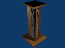
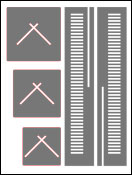
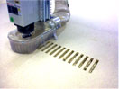
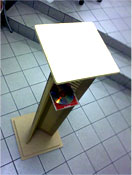

machining
assignment : make something big
Pic. 1 
Pic. 2 
Pic. 3 
Pic. 4 
| I
decided to make something that I needed and was
practical for me.
So I decided on making some speaker stands for my Home Recording
studio. But further more I decided it was to double as a CD rack.
For my first step I decided to first make a 3d model which I made in blender ( pic 1 ). I found this very useful cause working on the 3d model awoke allot of questions and issues on the construction. Like where holes need to be and how to fit things together and what parts where needed Next I drew up all the parts in Inkscape in the there right sizes and shapes and sorted them out after the material size ( pic 2 ). Then saved it as a .pdf file. And then opened it up in Partworks. In part works I then set each line to the appropriate tool bit and depth. Also I set the order of which I wanted things to be cut out because I want the Shopbot to end on cutting the outlines to avoid any unwanted movement of the material. From Partworks I then exported the toolpath and went on to the Shopbot where I "printed" it out ( pic 3 ). And after a few minutes of sanding and fitting and some glue my first "speaker stand / cd rack" was constructed ( pic 4 ). And now I just have to make another one and paint them, I´ll but in a photo of the finished product when I'm done. |
||